http://seaborn.pydata.org/index.html
Seaborn其实是在matplotlib的基础上进行了更高级的API封装，从而使得作图更加容易，在大多数情况下使用seaborn就能做出很具有吸引力的图，而使用matplotlib就能制作具有更多特色的图。应该把Seaborn视为matplotlib的补充，而不是替代物。
Python中的一个制图工具库，可以制作出吸引人的、信息量大的统计图
在Matplotlib上构建，支持numpy和pandas的数据结构可视化。
多个内置主题及颜色主题
可视化单一变量、二维变量用于比较数据集中各变量的分布情况
可视化线性回归模型中的独立变量及不独立变量
import numpy as np
import pandas as pd
# from scipy import stats
import matplotlib.pyplot as plt
import seaborn as sns
# %matplotlib inline
数据集分布可视化
单变量分布 sns.distplot()
示例代码：
# 单变量分布
x1 = np.random.normal(size=1000)
sns.distplot(x1);
x2 = np.random.randint(0, 100, 500)
sns.distplot(x2);
运行结果：
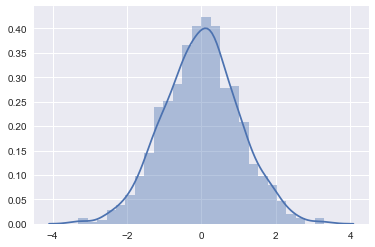
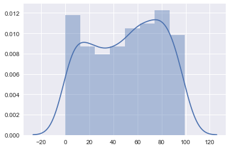
直方图 sns.distplot(kde=False)
示例代码：
# 直方图
sns.distplot(x1, bins=20, kde=False, rug=True)
运行结果：
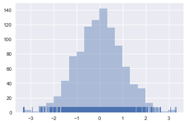
核密度估计 sns.distplot(hist=False) 或 sns.kdeplot()
示例代码：
# 核密度估计
sns.distplot(x2, hist=False, rug=True)
运行结果： 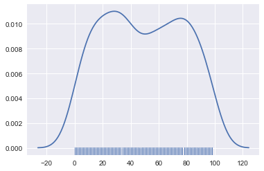
双变量分布
示例代码：
# 双变量分布
df_obj1 = pd.DataFrame({"x": np.random.randn(500),
"y": np.random.randn(500)})
df_obj2 = pd.DataFrame({"x": np.random.randn(500),
"y": np.random.randint(0, 100, 500)})
散布图 sns.jointplot()
示例代码：
# 散布图
sns.jointplot(x="x", y="y", data=df_obj1)
运行结果：
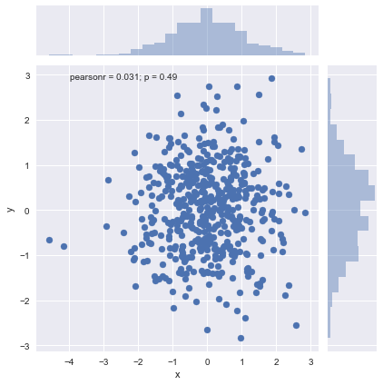
二维直方图 Hexbin sns.jointplot(kind=‘hex’)
示例代码：
# 二维直方图
sns.jointplot(x="x", y="y", data=df_obj1, kind="hex");
运行结果：
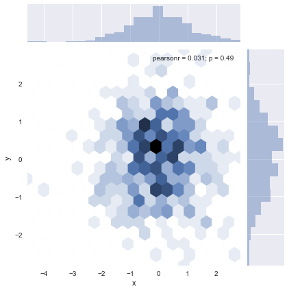
核密度估计 sns.jointplot(kind=‘kde’)
示例代码：
# 核密度估计
sns.jointplot(x="x", y="y", data=df_obj1, kind="kde");
运行结果：
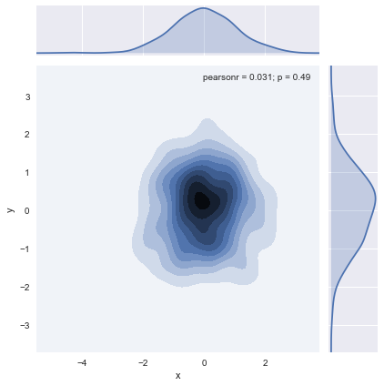
数据集中变量间关系可视化 sns.pairplot()
示例代码：
# 数据集中变量间关系可视化
dataset = sns.load_dataset("tips")
#dataset = sns.load_dataset("iris")
sns.pairplot(dataset);
运行结果：

类别数据可视化
#titanic = sns.load_dataset('titanic')
#planets = sns.load_dataset('planets')
#flights = sns.load_dataset('flights')
#iris = sns.load_dataset('iris')
exercise = sns.load_dataset('exercise')
类别散布图
sns.stripplot() 数据点会重叠
示例代码：
sns.stripplot(x="diet", y="pulse", data=exercise)
运行结果：
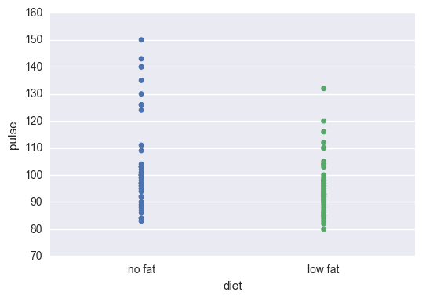
sns.swarmplot() 数据点避免重叠，hue指定子类别
示例代码：
sns.swarmplot(x="diet", y="pulse", data=exercise, hue='kind')
运行结果： 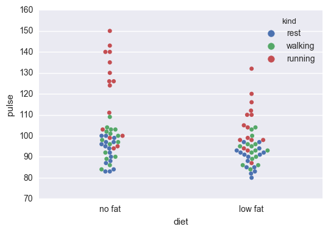
类别内数据分布
盒子图 sns.boxplot(), hue指定子类别
示例代码：
# 盒子图
sns.boxplot(x="diet", y="pulse", data=exercise)
#sns.boxplot(x="diet", y="pulse", data=exercise, hue='kind')
运行结果：
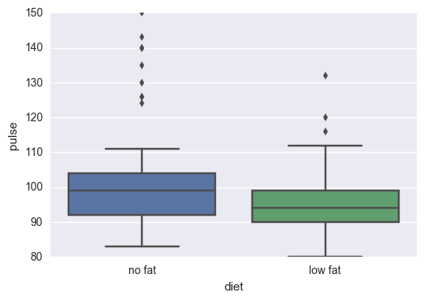
小提琴图 sns.violinplot(), hue指定子类别
示例代码：
# 小提琴图
#sns.violinplot(x="diet", y="pulse", data=exercise)
sns.violinplot(x="diet", y="pulse", data=exercise, hue='kind')
运行结果：
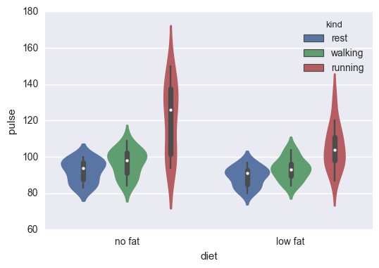
类别内统计图
柱状图 sns.barplot()
示例代码：
# 柱状图
sns.barplot(x="diet", y="pulse", data=exercise, hue='kind')
运行结果：
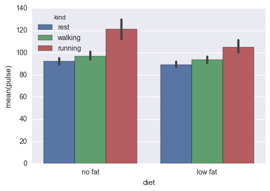
点图 sns.pointplot()
示例代码：
# 点图
sns.pointplot(x="diet", y="pulse", data=exercise, hue='kind');
运行结果：
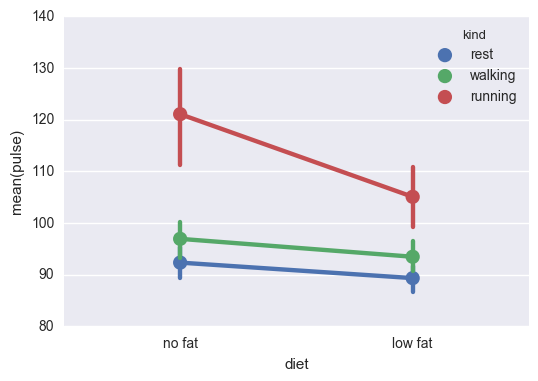